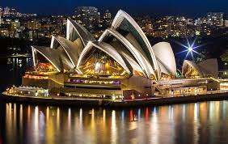

Ópera de Sídney
La Ópera de Sídney es uno de los íconos más reconocibles de Australia y una obra maestra de la arquitectura del siglo XX. Situada en el puerto de Sídney, ofrece espectáculos de ópera, ballet, teatro y música clásica en un entorno espectacular.